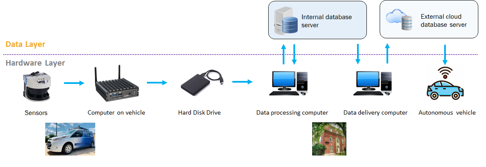
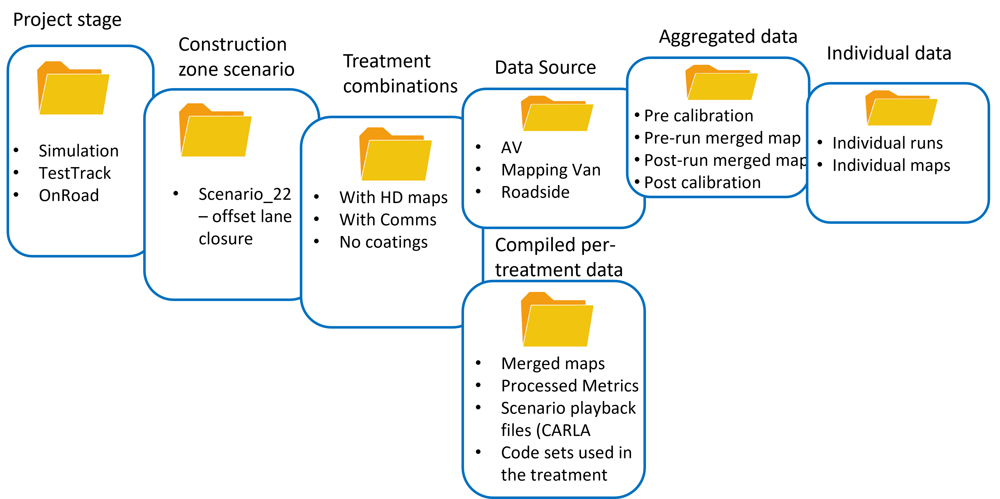

Project activity by topic¶
Decide how to do traffic and vehicle simulations¶

- TrafficSimulators_GettingStartedWithDifferrentSimulators_GettingStartedWithCARLA: Launch page to get started with CARLA
- TrafficSimulators_GettingStartedWithDifferrentSimulators_GettingStartedWithSUMO: Launch page to get started with SUMO

- TrafficSimulators_GettingStartedWithDifferrentSimulators_GettingStartedWithCARLA-SUMOCosimulation: Launch page to get started with CARLA-SUMO cosimulation (IVSG - PSU internal)
Mapping¶
About the Mapping Van¶
- Mapping_MappingVan_About: General information about the Penn State Mapping Van. Mapping van is shown below.

Choice of Coordinate Systems for Wide Areas¶
- Mapping_CoordinateSystems_WideAreas: Discussion of coordinate systems and the errors each can introduce when mapping large areas (cloned from IVSG on 2023 04 03).The coordinate system conversions through simulation work are as below.

Hardware installation¶
- Hardware_MappingVanHardware_CADdrawings: The mapping van measurements used for the GPS antenna calibration. Sample CAD drawings are below.


Power System
- Hardware_MappingVanHardware_PowerSystem: Setup of power system (IVSG - PSU internal)
Time Synchonization
- FieldDataCollection_TypicalHardwareSetups_TriggerCameraUsingExternalSignal:Methods to externally trigger FLIR cameras to external trigger signals. (IVSG - PSU internal)
- FieldDataCollection_TypicalHardwareSetups_TimeSync_ArduinoUsingGPSPPS: Producing tight time-trigger pulses (less than 20 microseconds jitter) via Arduinos. (IVSG - PSU internal)
- FieldDataCollection_TypicalHardwareSetups_TimeSyncTriggerBox: CAD models for trigger box. (IVSG - PSU internal)
Sensors - Cameras
- Hardware_MappingVanHardware_Camera: Remounting the cameras to improve regidity, water intrusion, and hardware faults. (IVSG - PSU internal)
- Camera Calibration : Methods used to calibrate the camera system. (IVSG - PSU internal)
Sensors - LIDAR
- Hardware_MappingVanHardware_LiDAR: Documents of LiDAR specs. (IVSG - PSU internal)
- FieldDataCollection_TypicalHardwareSetups_LIDARs_CeptonX90Install: Procedure of installing CeptonX90 LiDAR. (IVSG - PSU internal)
- FieldDataCollection_TypicalHardwareSetups_LIDARs_VelodyneVLP16Install: Procedure of installing VelodyneVLP16 LiDAR. (IVSG - PSU internal)
Sensors - Wheel Encoders
- Hardware_MappingVanHardware_Encoder: Setup of encoders. (IVSG - PSU internal)
Sensors - Radar
- Hardware_MappingVanHardware_Radar: Setup of Radar. (IVSG - PSU internal)
Sensors - GPS
- Hardware_MappingVanHardware_GPS: Setup of GPS. (IVSG - PSU internal)
Sensors - IMU
- Hardware_MappingVanHardware_IMU: Setup of IMU. (IVSG - PSU internal)
Sensors - Steering System
- Hardware_MappingVanHardware_SteeringSystem: Setup of steering system. (IVSG - PSU internal)
Data Parsing¶
- FieldDataCollection_DataCollectionProcedures_ParseRawDataToDatabase: Parse raw data (.bag) to raw data database. (IVSG - PSU internal)
- FieldDataCollection_DataCollectionProcedures_DataTransferWithDMS:Transfer data to PennDOT DMS. (IVSG - PSU internal)
- FieldDataCollection_DataCollectionProcedures_AutomatingDataTransferToDMSUsingCommandLine: Transfer data to PennDOT DMS using command line tools. (IVSG - PSU internal)
- FieldDataCollection_DataCollectionProcedures_StitchingImagesToVideo:Stitching parsed images into a video. (IVSG - PSU internal)
The data flow of the simulation is below

For zoomed-in view, please see: https://github.com/PAWorkzoneAutomation/PAWorkzoneAutomation.github.io/blob/main/Images/PennDOT_Simulation_Workflow_V2.drawio.png
{kind=link}
Simulating construction scenarios¶
- Simulating a traffic flow on Penn State test track: The work in this area involves information to guide how to simulate a traffic flow on Penn State test track. (IVSG - PSU internal)

- The following tables show the three roadway situations for the simulation: urban, artirial and highway, including the location we picked in State College and the corresponding data link.
| Situations | Urban |
|---|---|
| City | PA, State College |
| Location Description |
|
| Site Number | 1134 |
| Data Time | Nov 16, 2016 |
| Peak Time | 8AM |
| Peak Volume (Vehicles/h) | 696 |
| Off-peak Time | 1PM |
| Off-peak Volume (Vehicles/h) | 368 |
| Link to Real Traffic Data | https://gis.penndot.gov/tire/tms-sites/1134/report |
| Situations | Arterial |
|---|---|
| City | PA, State College |
| Location Description |
|
| Site Number | 1136 |
| Data Time | Nov 16, 2016 |
| Peak Time | 5PM |
| Peak Volume (Vehicles/h) | 2374 |
| Off-peak Time | 9AM |
| Off-peak Volume (Vehicles/h) | 1212 |
| Link to Real Traffic Data | https://gis.penndot.gov/tire/tms-sites/1136/report |
| Situations | Highway |
|---|---|
| City | PA, State College |
| Location Description |
|
| Site Number | 1180 |
| Data Time | Dec 05, 2017 |
| Peak Time | 4PM |
| Peak Volume (Vehicles/h) | 4046 |
| Off-peak Time | 9AM |
| Off-peak Volume (Vehicles/h) | 2321 |
| Link to Real Traffic Data | https://gis.penndot.gov/tire/tms-sites/1180/report |
- The following table shows the summary about whether the considered three roadway situations could be applied to each of the proposed 20 scenarios.
| Scenario | Scenario Summary | Urban | Arterial | Highway |
|---|---|---|---|---|
| 1.1 |
|
Y | Y | Y |
| 1.2 |
|
Y | Y | Y |
| 1.3 |
|
N | N | Y |
| 1.4 |
|
N | N | Y |
| 1.5 |
|
Y | Y | N |
| 1.6 |
|
N | N | Y |
| 2.1 |
|
Y | Y | Y |
| 2.2 |
|
Y | Y | Y |
| 2.3 | LANE SHIFT TO TEMPORARY ROADWAY | Y | Y | Y |
| 2.4 |
|
Y | Y | Y |
| 3.1 |
|
Y | Y | Y |
| 4.1a |
|
Y | Y | Y |
| 4.1b |
|
N | N | Y |
| 4.2 |
|
N | N | Y |
| 4.3 |
|
N | N | Y |
| 5.1a |
|
Y | Y | Y |
| 5.1b |
|
N | N | Y |
| 5.2 |
|
Y | Y | Y |
| 6.1 |
|
Y | Y | Y |
Simulation post processing¶
- FeatureExtraction_Association_PointToPointAssociation: Functions are provided to determine matches between data sets of (X,Y) points, store and compare groups of associated points (patch objects), and determine intersections between patch objects and circular arcs (useful for collision detection).

- FeatureExtraction_SafetyMetrics_SafetyMetricsClass: MATLAB code implementation of functions that perform safety metric calculations given a set of objects and a path through them.

Time to collision

Demo of vehicle doing a lane change
GPS and CORS Calibration¶
- FieldDataCollection_GPSRelatedCodes_RTKCorrectionService: Setting up and using of Real-time kinematic (RTK) via Networked Transport of RTCM via Internet Protocol (NTRIP).(IVSG - PSU internal).

Data Processing¶
Processing GPS Data
- DataProcessing_GPS_GPSConversionMethods: A repo sharing the algorithms used for GPS conversions, e.g. LLA to ENU (cloned from IVSG on 2023 04 03).
Maps and scenarios¶
- FieldDataCollection_VisualizingFieldData_PlotWorkZone: A repo displaying the scenarios and their descriptions. (IVSG - PSU internal)

Data collection for on-track tests¶
Data Management System (DMS)¶
The data tags definition is below:
Stage - either “Simulation”,”TestTrack”,”OnRoad”
ScenarioNumber - the ID number for the Scenario
ScenarioShortName - the “short” name for the Scenario
Treatments - These are 3 subfields, for HD maps, Comms, Coatings - each for “with” and “without”
DataSource - either “AV” or “MappingVan” or “Roadside”
Per-treatment data - “MergedMap” or “ProcessedMetrics” or “CARLAScenario” or “Codes”
Aggregated mapping data - “Precalibration”, “Prerun”, “Postrun”, “Postcalibration”
Individual run data - the run number, e.g. pass number 1 of the AV
To be added:
- About the DMS
- Accessing the DMS from the public
- Accessing the DMS from the team
- Process for data upload/download
Automonous Vehicle testing¶
To be added:
- About the AV
- the AV equipment
- the AV setup
- the AV testing
- the AV sample data
- the AV results
Coatings¶
To be added:
- About coatings
- Coating details used in the project
- Calibration of the coatings
- Coating tests
- Coating results
Work Zone Instrumentation¶
- About Work Zone Instrumentation
- Work Zone Instrumentation equipment
- Work Zone Instrumentation setup
- Work Zone Instrumentation testing
- Work Zone Instrumentation sample data
- Work Zone Instrumentation results